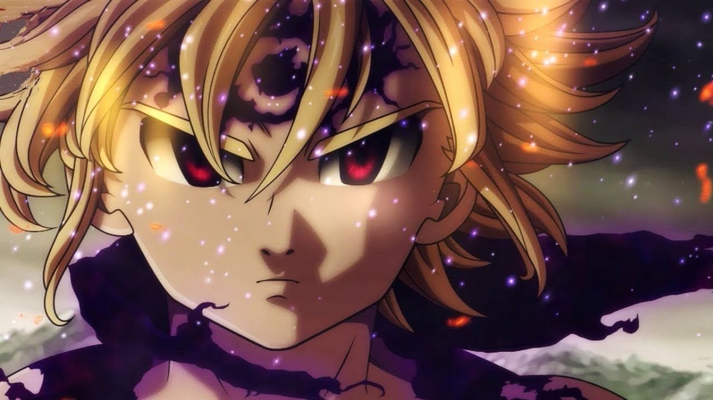

About Me
- So as you know my name is Simon Rong and I go to Umass Boston majoring in CS.
- In my free time I like to watch youtube, play video games and basketball.
- I sometimes watch anime but not a lot. Some of my favorite animes are: Hunter x Hunter, 7 Deadly Sins, and Hiakyuu.
- Some games that I enjoy are: League of Legends, Valorant, and Overwatch.
- My favorite colors are blue and black (Don't really got a favorite).
- Currently, I'm taking online zoom classes and developing this website for one of my classes called cs187 seminar course, and so far personally I have learned a lot of html and css this semester. Although since classes are online and it is a bit hard to keep my motivation for learning and doing school work, I think I've been managing my course work well and overall learning a good amount especially in this course.